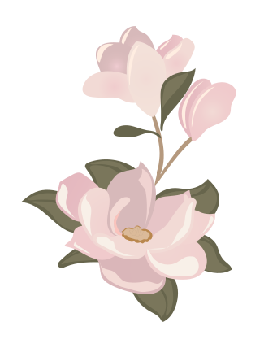
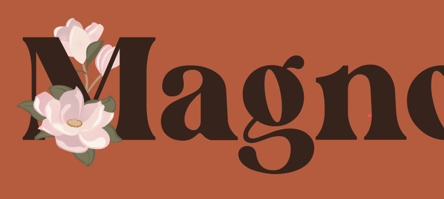

Floral Illustration Magnoliac
A promotional graphic for the starting band Magnoliac. They were using an illustration they found on the internet and they wanted something similar, but legal. It became very similar to the original but with more flat colors.

Logo Bopping Machine Rockabilly
A logo for the band Bopping Machine Rockabilly. The band's guitarist provided a rough sketch and multiple images they used as inspiration. I used that to put together this logo in illustrator. This has been used for stickers and a large canvas they put up for their shows.